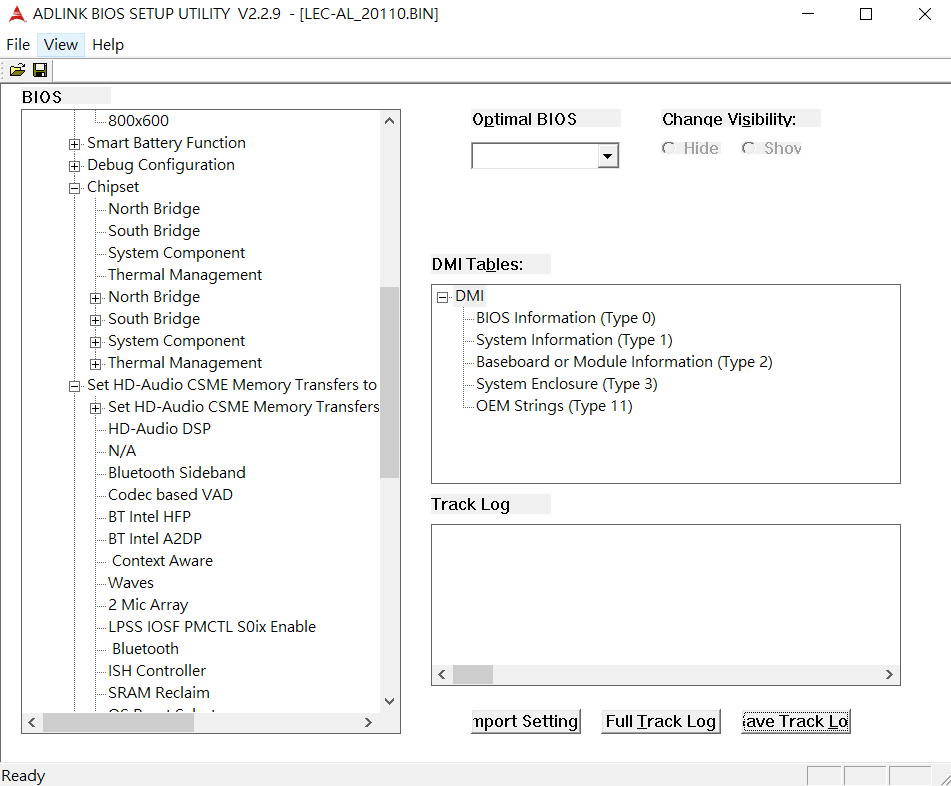

Introduction¶
What is BMT?¶
BIOS Modification tool is common utility for all ADLINK COM/SAMRC/Q7 products, which allows you to perform ADLINK AMI UEFI BIOS binary file for customer needs. This utility only support WIndows GUI version and all operation are performaed on BIOS ROM file only. When ROM file is selected on this utility and allow you to load ADLINK BIOS for the following hardware, see Support Hardware
Note
It is free utility and 3rd-party license is not required
Features¶
{kind=link}
Rename Entries: Allow you to renew the name for each node or entries
Change Visibility: Allow you to hide / show any entries
Set Default Values: Allow you to configure the values for each entries
Change DMI Information: Allow you to modify DMI data, such BIOS information, System information or to add OEM strings
Track Changes: Allow you to trace any changes you made before.
Import setting: Allow you import your preference without re-configuration.
Support Operating System¶
Windows 7 32bit/64bit
Windows 10 64bit
Support Hardware¶
Express-CF
Express-KL, cExpress-KL
Express-SL, cExpress-SL
Express-BL, cExpress-BL
Express-DN7
Express-BD7
cExpress-AL, NanoX-AL, Q7-AL and LEC-AL
cExpress-BW, Q7-BW, LEC-BW
cExpress-BT, cExpress-BT2, NanoX-BT,
ETX-BT, LEC-BT, Q7-BT